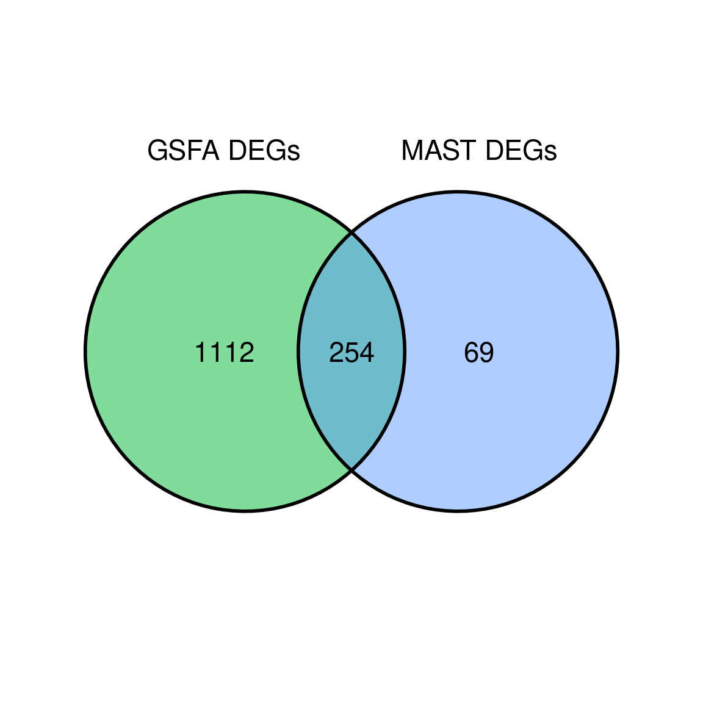
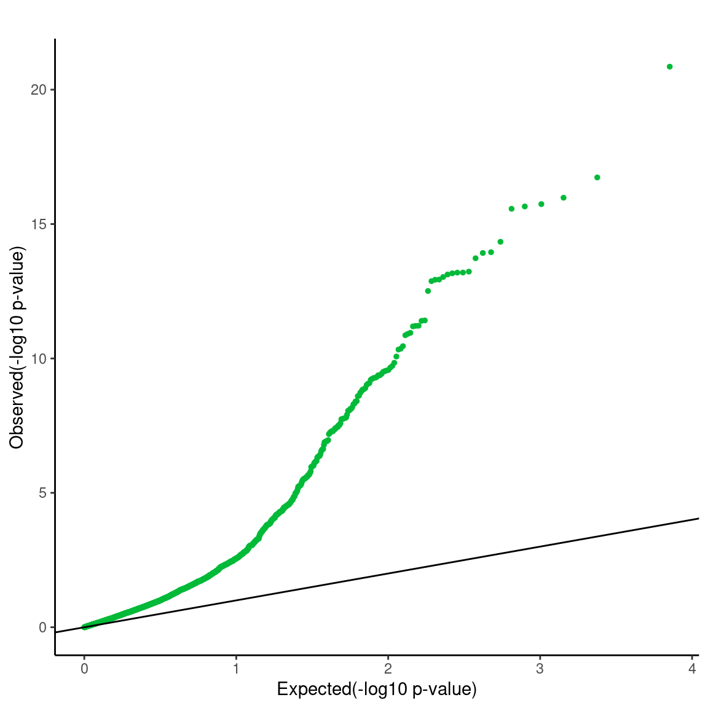
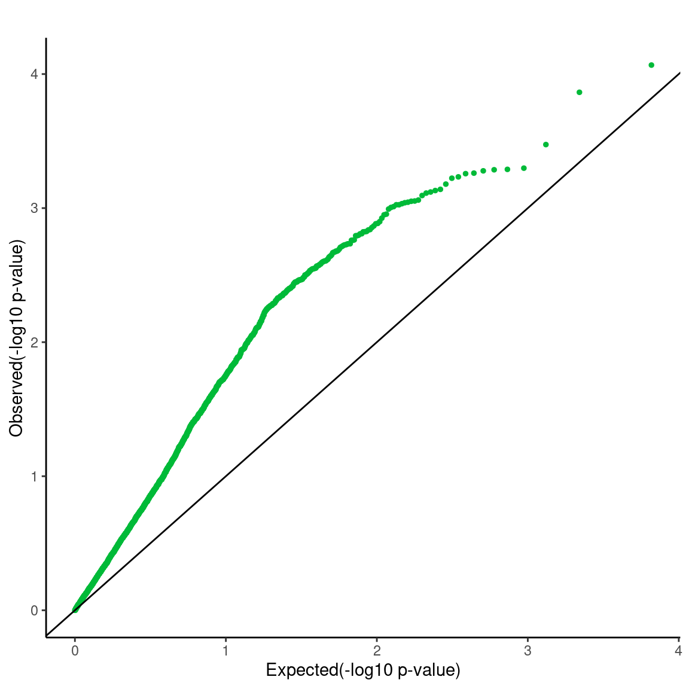
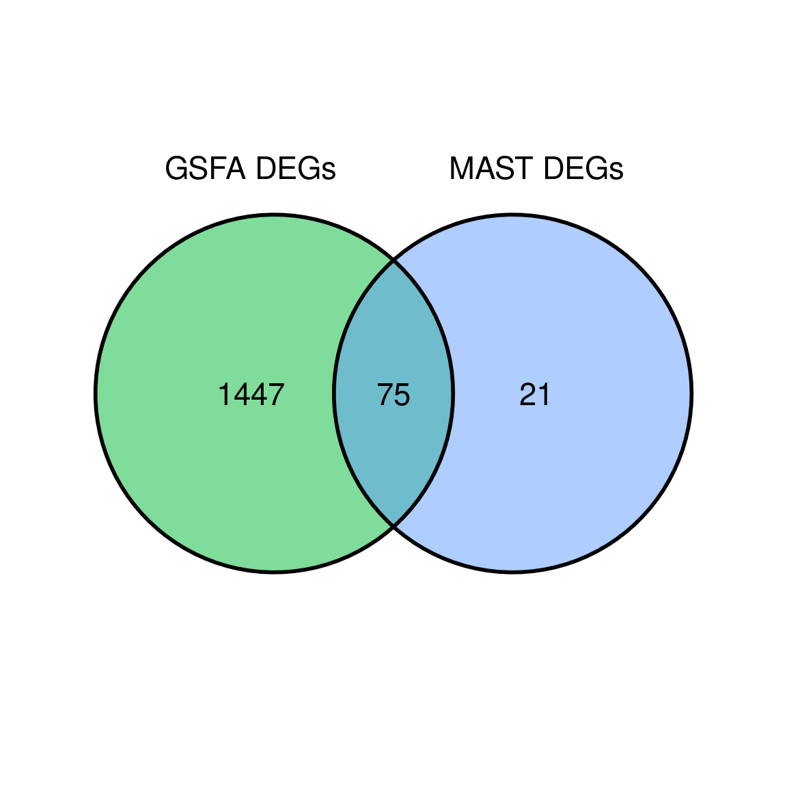
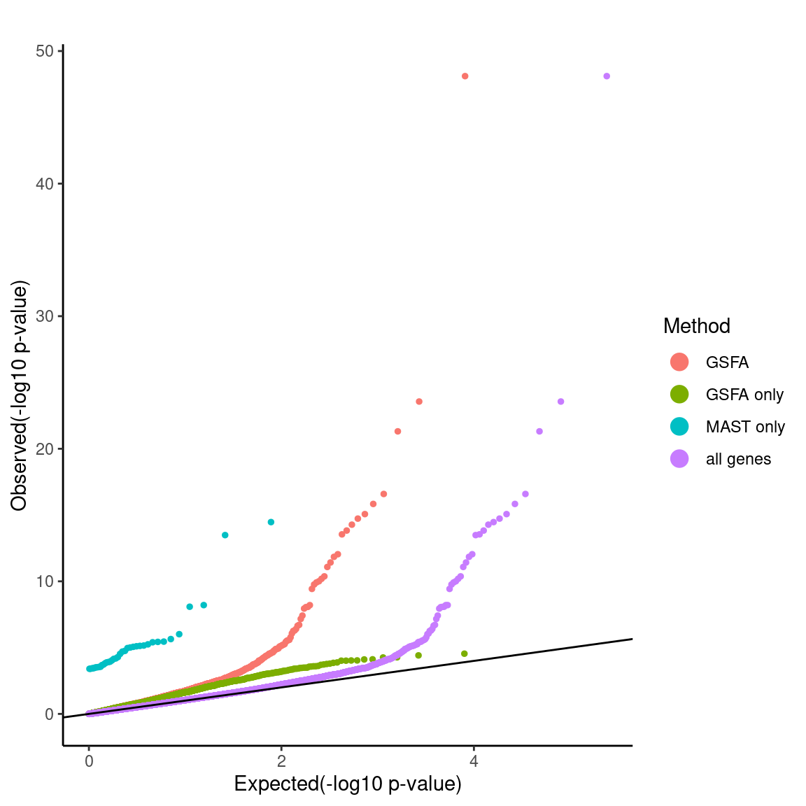
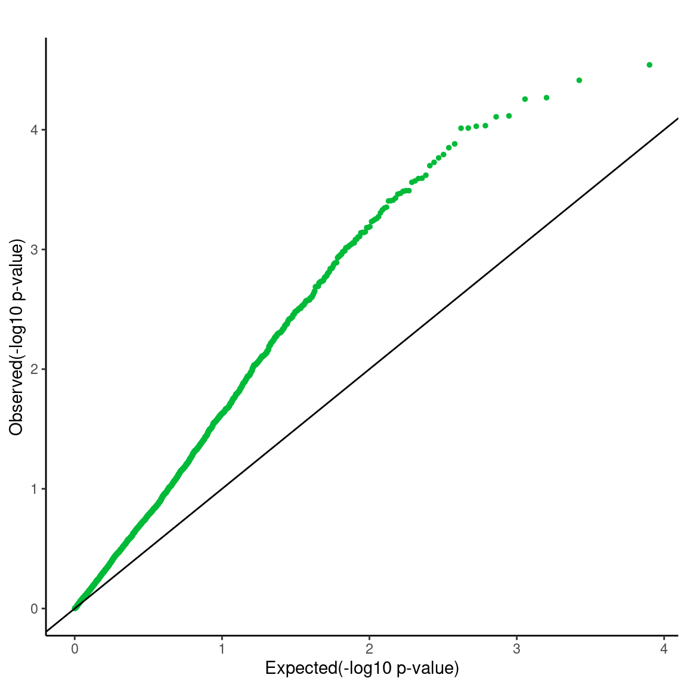

Compare GSFA with MAST DEG results
Kaixuan Luo
2022-09-02
Last updated: 2022-09-07
Checks: 7 0
Knit directory: GSFA_analysis/
This reproducible R Markdown analysis was created with workflowr (version 1.7.0). The Checks tab describes the reproducibility checks that were applied when the results were created. The Past versions tab lists the development history.
Great! Since the R Markdown file has been committed to the Git repository, you know the exact version of the code that produced these results.
Great job! The global environment was empty. Objects defined in the global environment can affect the analysis in your R Markdown file in unknown ways. For reproduciblity it’s best to always run the code in an empty environment.
The command set.seed(20220524) was run prior to running
the code in the R Markdown file. Setting a seed ensures that any results
that rely on randomness, e.g. subsampling or permutations, are
reproducible.
Great job! Recording the operating system, R version, and package versions is critical for reproducibility.
Nice! There were no cached chunks for this analysis, so you can be confident that you successfully produced the results during this run.
Great job! Using relative paths to the files within your workflowr project makes it easier to run your code on other machines.
Great! You are using Git for version control. Tracking code development and connecting the code version to the results is critical for reproducibility.
The results in this page were generated with repository version b492ebf. See the Past versions tab to see a history of the changes made to the R Markdown and HTML files.
Note that you need to be careful to ensure that all relevant files for
the analysis have been committed to Git prior to generating the results
(you can use wflow_publish or
wflow_git_commit). workflowr only checks the R Markdown
file, but you know if there are other scripts or data files that it
depends on. Below is the status of the Git repository when the results
were generated:
Ignored files:
Ignored: .Rhistory
Ignored: .Rproj.user/
Untracked files:
Untracked: Rplots.pdf
Untracked: analysis/check_Tcells_datasets.Rmd
Untracked: analysis/interpret_gsfa_LUHMES.Rmd
Untracked: analysis/interpret_gsfa_TCells.Rmd
Untracked: analysis/spca_LUHMES_data.Rmd
Untracked: analysis/test_seurat.Rmd
Untracked: code/gsfa_negctrl_job.sbatch
Untracked: code/music_LUHMES_Yifan.R
Untracked: code/plotting_functions.R
Untracked: code/run_gsfa_2groups_negctrl.R
Untracked: code/run_gsfa_negctrl.R
Untracked: code/run_music_LUHMES.R
Untracked: code/run_music_LUHMES_data.sbatch
Untracked: code/run_music_LUHMES_data_20topics.R
Untracked: code/run_music_LUHMES_data_20topics.sbatch
Untracked: code/run_sceptre_Tcells_stimulated_data.sbatch
Untracked: code/run_sceptre_Tcells_unstimulated_data.sbatch
Untracked: code/run_spca_LUHMES.R
Untracked: code/run_spca_TCells.R
Untracked: code/run_twostep_clustering_LUHMES_data_6kgenes.R
Untracked: code/run_unguided_gsfa_LUHMES.R
Untracked: code/run_unguided_gsfa_LUHMES.sbatch
Untracked: code/run_unguided_gsfa_Tcells.R
Untracked: code/run_unguided_gsfa_Tcells.sbatch
Untracked: code/sceptre_LUHMES_data.R
Untracked: code/sceptre_Tcells_stimulated_data.R
Untracked: code/sceptre_Tcells_unstimulated_data.R
Untracked: code/seurat_sim_fpr_tpr.R
Untracked: code/unguided_GFSA_mixture_normal_prior.cpp
Unstaged changes:
Modified: analysis/music_LUHMES_data.Rmd
Modified: analysis/sceptre_LUHMES_data.Rmd
Modified: analysis/twostep_clustering_LUHMES_data.Rmd
Modified: code/run_sceptre_LUHMES_data.R
Modified: code/run_sceptre_LUHMES_data.sbatch
Modified: code/run_sceptre_cropseq_data.sbatch
Modified: code/run_twostep_clustering_LUHMES_data.R
Modified: code/sceptre_analysis.R
Note that any generated files, e.g. HTML, png, CSS, etc., are not included in this status report because it is ok for generated content to have uncommitted changes.
These are the previous versions of the repository in which changes were
made to the R Markdown
(analysis/compare_gsfa_mast_degs.Rmd) and HTML
(docs/compare_gsfa_mast_degs.html) files. If you’ve
configured a remote Git repository (see ?wflow_git_remote),
click on the hyperlinks in the table below to view the files as they
were in that past version.
| File | Version | Author | Date | Message |
|---|---|---|---|---|
| Rmd | b492ebf | kevinlkx | 2022-09-07 | removed legend in QQplots for GSFA only pvalues |
| html | c10b536 | kevinlkx | 2022-09-07 | Build site. |
| Rmd | 2c27043 | kevinlkx | 2022-09-07 | added QQplots for all GSFA pvalues |
| html | d8a9602 | kevinlkx | 2022-09-05 | Build site. |
| Rmd | b0c058d | kevinlkx | 2022-09-05 | updated qqplots for gsfa only |
| html | 00603ad | kevinlkx | 2022-09-03 | Build site. |
| Rmd | 9cd02e4 | kevinlkx | 2022-09-03 | updated qq plots |
| html | 7d40768 | kevinlkx | 2022-09-03 | Build site. |
| Rmd | 4af8f3b | kevinlkx | 2022-09-03 | added QQ plots for GSFA only genes |
Load packages
suppressPackageStartupMessages(library(data.table))
suppressPackageStartupMessages(library(ggplot2))
require(reshape2)
require(dplyr)
theme_set(theme_bw() + theme(plot.title = element_text(size = 14, hjust = 0.5),
axis.title = element_text(size = 14),
axis.text = element_text(size = 13),
legend.title = element_text(size = 13),
legend.text = element_text(size = 12),
panel.grid.minor = element_blank())
)
library(ggvenn)
source("code/plotting_functions.R")Set directories
res_dir <- "/project2/xinhe/kevinluo/GSFA/compare_with_mast/"
dir.create(res_dir, recursive = TRUE, showWarnings = FALSE)LUHMES data
Load the output of GSFA fit_gsfa_multivar() run.
data_folder <- "/project2/xinhe/yifan/Factor_analysis/LUHMES/"
fit <- readRDS(paste0(data_folder,
"gsfa_output_detect_01/use_negctrl/All.gibbs_obj_k20.svd_negctrl.seed_14314.light.rds"))
gibbs_PM <- fit$posterior_means
lfsr_mat <- fit$lfsr[, -ncol(fit$lfsr)]
total_effect <- fit$total_effect[, -ncol(fit$total_effect)]
KO_names <- colnames(lfsr_mat)
guides <- KO_names[KO_names!="Nontargeting"]DEGs detected by GSFA
lfsr_mat <- lfsr_mat[, guides]
gsfa_degs <- apply(lfsr_mat, 2, function(x){names(x)[x < 0.05]})
sapply(gsfa_degs, length) ADNP ARID1B ASH1L CHD2 CHD8 CTNND2 DYRK1A HDAC5 MECP2 MYT1L POGZ
795 310 322 756 0 0 23 0 0 0 0
PTEN RELN SETD5
895 0 466 Load MAST single-gene DE result
mast_list <- list()
for (m in guides){
fname <- paste0(data_folder, "processed_data/MAST/dev_top6k_negctrl/gRNA_", m, ".dev_res_top6k.vs_negctrl.rds")
tmp_df <- readRDS(fname)
tmp_df$geneID <- rownames(tmp_df)
tmp_df <- tmp_df %>% dplyr::rename(FDR = fdr, PValue = pval)
mast_list[[m]] <- tmp_df
}
mast_signif_counts <- sapply(mast_list, function(x){filter(x, FDR < 0.05) %>% nrow()})DEGs detected by MAST
mast_degs <- lapply(mast_list, function(x){rownames(x)[x$FDR < 0.05]})
sapply(mast_degs, length) ADNP ARID1B ASH1L CHD2 CHD8 CTNND2 DYRK1A HDAC5 MECP2 MYT1L POGZ
38 54 15 88 1 0 0 1 1 0 0
PTEN RELN SETD5
207 0 7 Compare DEGs from GSFA vs MAST
num_deg_guides.df <- data.frame()
for (m in guides){
shared_degs <- intersect(mast_degs[[m]], gsfa_degs[[m]])
mast_only_degs <- setdiff(mast_degs[[m]], gsfa_degs[[m]])
gsfa_only_degs <- setdiff(gsfa_degs[[m]], mast_degs[[m]])
num_deg_guides.df <- rbind(num_deg_guides.df,
data.frame(guide = m, shared = length(shared_degs), mast_only = length(mast_only_degs), gsfa_only = length(gsfa_only_degs)))
}
all_mast_degs <- unique(unlist(mast_degs))
all_gsfa_degs <- unique(unlist(gsfa_degs))
length(all_gsfa_degs)
length(all_mast_degs)
length(setdiff(all_gsfa_degs, all_mast_degs))
length(setdiff(all_mast_degs, all_gsfa_degs))
length(intersect(all_gsfa_degs, all_mast_degs))
deg_list <- list("GSFA DEGs" = all_gsfa_degs,
"MAST DEGs" = all_mast_degs)
ggvenn(deg_list, fill_color = c("#00BA38","#619CFF"), show_percentage = FALSE, set_name_size = 6, text_size = 6)
[1] 1366
[1] 323
[1] 1112
[1] 69
[1] 254QQ plots comparing GSFA with MAST
combined_mast_res <- data.frame()
for(i in 1:length(guides)){
guide <- guides[i]
mast_res <- mast_list[[guide]]
gsfa_de_genes <- gsfa_degs[[guide]]
gsfa_de_genes <- intersect(gsfa_de_genes, rownames(mast_res))
mast_res$gsfa_gene <- 0
if(length(gsfa_de_genes) >0){
mast_res[gsfa_de_genes, ]$gsfa_gene <- 1
}
combined_mast_res <- rbind(combined_mast_res, mast_res)
}
pvalue_list <- list('GSFA'=dplyr::filter(combined_mast_res,gsfa_gene==1)$PValue,
'all genes'=combined_mast_res$PValue)
qqplot.pvalue(pvalue_list, pointSize = 1, legendSize = 4) +
ggtitle("") + theme(plot.title = element_text(hjust = 0.5)) +
scale_colour_discrete(name="Method") +
scale_color_manual(values=c("#00BA38","#619CFF"))
combined_mast_res <- data.frame()
for(m in guides){
mast_res <- mast_list[[m]]
curr_gsfa_degs <- gsfa_degs[[m]]
curr_mast_degs <- mast_degs[[m]]
gsfa_only_degs <- setdiff(curr_gsfa_degs, curr_mast_degs)
mast_only_degs <- setdiff(curr_mast_degs, curr_gsfa_degs)
mast_res$guide <- m
mast_res$gsfa_gene <- 0
if(length(curr_gsfa_degs) >0){
mast_res[curr_gsfa_degs, ]$gsfa_gene <- 1
}
mast_res$gsfa_only_gene <- 0
if(length(gsfa_only_degs) >0){
mast_res[gsfa_only_degs, ]$gsfa_only_gene <- 1
}
mast_res$mast_only_gene <- 0
if(length(mast_only_degs) >0){
mast_res[mast_only_degs, ]$mast_only_gene <- 1
}
combined_mast_res <- rbind(combined_mast_res, mast_res)
}
pvalue_list <- list('GSFA'=dplyr::filter(combined_mast_res,gsfa_gene==1)$PValue,
'GSFA only'=dplyr::filter(combined_mast_res,gsfa_only_gene==1)$PValue,
'MAST only'=dplyr::filter(combined_mast_res,mast_only_gene==1)$PValue,
'all genes'=combined_mast_res$PValue)
qqplot.pvalue(pvalue_list, pointSize = 1, legendSize = 4) +
ggtitle("") + theme(plot.title = element_text(hjust = 0.5)) +
scale_colour_discrete(name="Method")
combined_mast_res <- data.frame()
for(m in guides){
mast_res <- mast_list[[m]]
curr_gsfa_degs <- gsfa_degs[[m]]
mast_res$gsfa_gene <- 0
if(length(curr_gsfa_degs) >0){
mast_res[curr_gsfa_degs, ]$gsfa_gene <- 1
}
combined_mast_res <- rbind(combined_mast_res, mast_res)
}
pvalue_list <- list('GSFA'=dplyr::filter(combined_mast_res,gsfa_gene==1)$PValue)
qqplot.pvalue(pvalue_list, pointSize = 1, legendSize = 4) +
ggtitle("") + theme(plot.title = element_text(hjust = 0.5)) +
scale_color_manual(values=c("#00BA38")) +
theme(legend.position="none")
| Version | Author | Date |
|---|---|---|
| c10b536 | kevinlkx | 2022-09-07 |
combined_mast_res <- data.frame()
for(m in guides){
mast_res <- mast_list[[m]]
curr_gsfa_degs <- gsfa_degs[[m]]
curr_mast_degs <- mast_degs[[m]]
gsfa_only_degs <- setdiff(curr_gsfa_degs, curr_mast_degs)
mast_res$gsfa_only_gene <- 0
if(length(gsfa_only_degs) >0){
mast_res[gsfa_only_degs, ]$gsfa_only_gene <- 1
}
combined_mast_res <- rbind(combined_mast_res, mast_res)
}
pvalue_list <- list('GSFA only'=dplyr::filter(combined_mast_res,gsfa_only_gene==1)$PValue)
qqplot.pvalue(pvalue_list, pointSize = 1, legendSize = 4) +
ggtitle("") + theme(plot.title = element_text(hjust = 0.5)) +
scale_color_manual(values=c("#00BA38")) +
theme(legend.position="none")
T cell data
Load the output of GSFA fit_gsfa_multivar() run.
data_folder <- "/project2/xinhe/yifan/Factor_analysis/Stimulated_T_Cells/"
fit <- readRDS(paste0(data_folder,
"gsfa_output_detect_01/all_uncorrected_by_group.use_negctrl/All.gibbs_obj_k20.svd_negctrl.restart.light.rds"))
gibbs_PM <- fit$posterior_means
lfsr_mat1 <- fit$lfsr1[, -ncol(fit$lfsr1)]
lfsr_mat0 <- fit$lfsr0[, -ncol(fit$lfsr0)]
total_effect1 <- fit$total_effect1[, -ncol(fit$total_effect1)]
total_effect0 <- fit$total_effect0[, -ncol(fit$total_effect0)]
KO_names <- colnames(lfsr_mat1)
guides <- KO_names[KO_names!="NonTarget"]DEGs detected by GSFA
lfsr_mat <- lfsr_mat1[, guides]
gsfa_degs <- apply(lfsr_mat, 2, function(x){names(x)[x < 0.05]})
sapply(gsfa_degs, length) ARID1A BTLA C10orf54 CBLB CD3D CD5 CDKN1B DGKA
393 107 66 631 0 645 468 32
DGKZ HAVCR2 LAG3 LCP2 MEF2D PDCD1 RASA2 SOCS1
113 35 1 589 15 0 277 356
STAT6 TCEB2 TMEM222 TNFRSF9
1 300 4 14 Load MAST single-gene DE result
mast_list <- list()
for (m in guides){
fname <- paste0(data_folder, "processed_data/MAST/all_by_stim_negctrl/gRNA_",
m, ".dev_res_top6k.vs_negctrl.rds")
tmp_df <- readRDS(fname)
tmp_df$geneID <- rownames(tmp_df)
tmp_df <- tmp_df %>% dplyr::rename(FDR = fdr, PValue = pval)
mast_list[[m]] <- tmp_df
}
mast_signif_counts <- sapply(mast_list, function(x){filter(x, FDR < 0.05) %>% nrow()})DEGs detected by MAST
mast_degs <- lapply(mast_list, function(x){rownames(x)[x$FDR < 0.05]})
sapply(mast_degs, length) ARID1A BTLA C10orf54 CBLB CD3D CD5 CDKN1B DGKA
7 0 0 27 3 3 0 0
DGKZ HAVCR2 LAG3 LCP2 MEF2D PDCD1 RASA2 SOCS1
0 0 0 5 0 1 4 0
STAT6 TCEB2 TMEM222 TNFRSF9
1 54 0 0 Compare DEGs from GSFA vs MAST
num_deg_guides.df <- data.frame()
for (m in guides){
shared_degs <- intersect(mast_degs[[m]], gsfa_degs[[m]])
mast_only_degs <- setdiff(mast_degs[[m]], gsfa_degs[[m]])
gsfa_only_degs <- setdiff(gsfa_degs[[m]], mast_degs[[m]])
num_deg_guides.df <- rbind(num_deg_guides.df,
data.frame(guide = m, shared = length(shared_degs), mast_only = length(mast_only_degs), gsfa_only = length(gsfa_only_degs)))
}
all_mast_degs <- unique(unlist(mast_degs))
all_gsfa_degs <- unique(unlist(gsfa_degs))
length(all_gsfa_degs)
length(all_mast_degs)
length(setdiff(all_gsfa_degs, all_mast_degs))
length(setdiff(all_mast_degs, all_gsfa_degs))
length(intersect(all_gsfa_degs, all_mast_degs))
deg_list <- list("GSFA DEGs" = all_gsfa_degs,
"MAST DEGs" = all_mast_degs)
ggvenn(deg_list, fill_color = c("#00BA38","#619CFF"), show_percentage = FALSE, set_name_size = 6, text_size = 6)
[1] 1522
[1] 96
[1] 1447
[1] 21
[1] 75QQ plots comparing GSFA with MAST
combined_mast_res <- data.frame()
for(i in 1:length(guides)){
guide <- guides[i]
mast_res <- mast_list[[guide]]
gsfa_de_genes <- gsfa_degs[[guide]]
gsfa_de_genes <- intersect(gsfa_de_genes, rownames(mast_res))
mast_res$gsfa_gene <- 0
if(length(gsfa_de_genes) >0){
mast_res[gsfa_de_genes, ]$gsfa_gene <- 1
}
combined_mast_res <- rbind(combined_mast_res, mast_res)
}
pvalue_list <- list('GSFA'=dplyr::filter(combined_mast_res,gsfa_gene==1)$PValue,
'all genes'=combined_mast_res$PValue)
qqplot.pvalue(pvalue_list, pointSize = 1, legendSize = 4) +
ggtitle("") + theme(plot.title = element_text(hjust = 0.5)) +
scale_colour_discrete(name="Method") +
scale_color_manual(values=c("#00BA38","#619CFF"))
combined_mast_res <- data.frame()
for(m in guides){
mast_res <- mast_list[[m]]
curr_gsfa_degs <- gsfa_degs[[m]]
curr_mast_degs <- mast_degs[[m]]
gsfa_only_degs <- setdiff(curr_gsfa_degs, curr_mast_degs)
mast_only_degs <- setdiff(curr_mast_degs, curr_gsfa_degs)
mast_res$guide <- m
mast_res$gsfa_gene <- 0
if(length(curr_gsfa_degs) >0){
mast_res[curr_gsfa_degs, ]$gsfa_gene <- 1
}
mast_res$gsfa_only_gene <- 0
if(length(gsfa_only_degs) >0){
mast_res[gsfa_only_degs, ]$gsfa_only_gene <- 1
}
mast_res$mast_only_gene <- 0
if(length(mast_only_degs) >0){
mast_res[mast_only_degs, ]$mast_only_gene <- 1
}
combined_mast_res <- rbind(combined_mast_res, mast_res)
}
pvalue_list <- list('GSFA'=dplyr::filter(combined_mast_res,gsfa_gene==1)$PValue,
'GSFA only'=dplyr::filter(combined_mast_res,gsfa_only_gene==1)$PValue,
'MAST only'=dplyr::filter(combined_mast_res,mast_only_gene==1)$PValue,
'all genes'=combined_mast_res$PValue)
qqplot.pvalue(pvalue_list, pointSize = 1, legendSize = 4) +
ggtitle("") + theme(plot.title = element_text(hjust = 0.5)) +
scale_colour_discrete(name="Method")
combined_mast_res <- data.frame()
for(m in guides){
mast_res <- mast_list[[m]]
curr_gsfa_degs <- gsfa_degs[[m]]
mast_res$gsfa_gene <- 0
if(length(curr_gsfa_degs) >0){
mast_res[curr_gsfa_degs, ]$gsfa_gene <- 1
}
combined_mast_res <- rbind(combined_mast_res, mast_res)
}
pvalue_list <- list('GSFA'=dplyr::filter(combined_mast_res,gsfa_gene==1)$PValue)
qqplot.pvalue(pvalue_list, pointSize = 1, legendSize = 4) +
ggtitle("") + theme(plot.title = element_text(hjust = 0.5)) +
scale_color_manual(values=c("#00BA38")) +
theme(legend.position="none")
| Version | Author | Date |
|---|---|---|
| c10b536 | kevinlkx | 2022-09-07 |
combined_mast_res <- data.frame()
for(m in guides){
mast_res <- mast_list[[m]]
curr_gsfa_degs <- gsfa_degs[[m]]
curr_mast_degs <- mast_degs[[m]]
gsfa_only_degs <- setdiff(curr_gsfa_degs, curr_mast_degs)
mast_res$gsfa_only_gene <- 0
if(length(gsfa_only_degs) >0){
mast_res[gsfa_only_degs, ]$gsfa_only_gene <- 1
}
combined_mast_res <- rbind(combined_mast_res, mast_res)
}
pvalue_list <- list('GSFA only'=dplyr::filter(combined_mast_res,gsfa_only_gene==1)$PValue)
qqplot.pvalue(pvalue_list, pointSize = 1, legendSize = 4) +
ggtitle("") + theme(plot.title = element_text(hjust = 0.5)) +
scale_color_manual(values=c("#00BA38")) +
theme(legend.position="none")
sessionInfo()R version 4.2.0 (2022-04-22)
Platform: x86_64-pc-linux-gnu (64-bit)
Running under: CentOS Linux 7 (Core)
Matrix products: default
BLAS/LAPACK: /software/openblas-0.3.13-el7-x86_64/lib/libopenblas_haswellp-r0.3.13.so
locale:
[1] LC_CTYPE=en_US.UTF-8 LC_NUMERIC=C LC_TIME=C
[4] LC_COLLATE=C LC_MONETARY=C LC_MESSAGES=C
[7] LC_PAPER=C LC_NAME=C LC_ADDRESS=C
[10] LC_TELEPHONE=C LC_MEASUREMENT=C LC_IDENTIFICATION=C
attached base packages:
[1] grid stats graphics grDevices utils datasets methods
[8] base
other attached packages:
[1] lattice_0.20-45 ggvenn_0.1.9 dplyr_1.0.9 reshape2_1.4.4
[5] ggplot2_3.3.6 data.table_1.14.2 workflowr_1.7.0
loaded via a namespace (and not attached):
[1] tidyselect_1.1.2 xfun_0.30 bslib_0.3.1 purrr_0.3.4
[5] colorspace_2.0-3 vctrs_0.4.1 generics_0.1.2 htmltools_0.5.2
[9] yaml_2.3.5 utf8_1.2.2 rlang_1.0.2 jquerylib_0.1.4
[13] later_1.3.0 pillar_1.7.0 withr_2.5.0 glue_1.6.2
[17] DBI_1.1.2 plyr_1.8.7 lifecycle_1.0.1 stringr_1.4.0
[21] munsell_0.5.0 gtable_0.3.0 evaluate_0.15 labeling_0.4.2
[25] knitr_1.39 callr_3.7.0 fastmap_1.1.0 httpuv_1.6.5
[29] ps_1.7.0 fansi_1.0.3 highr_0.9 Rcpp_1.0.8.3
[33] promises_1.2.0.1 scales_1.2.0 jsonlite_1.8.0 farver_2.1.0
[37] fs_1.5.2 digest_0.6.29 stringi_1.7.6 processx_3.5.3
[41] getPass_0.2-2 rprojroot_2.0.3 cli_3.3.0 tools_4.2.0
[45] magrittr_2.0.3 sass_0.4.1 tibble_3.1.7 crayon_1.5.1
[49] whisker_0.4 pkgconfig_2.0.3 ellipsis_0.3.2 assertthat_0.2.1
[53] rmarkdown_2.14 httr_1.4.3 rstudioapi_0.13 R6_2.5.1
[57] git2r_0.30.1 compiler_4.2.0